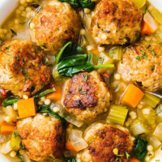

ODIN RECIPES

-
Total time:45 mins
-
Ingredients:
- 3/4 lb. ground chicken
- 1/2 lb. chicken sausage, casings removed
- 1/3 c. freshly grated Parmesan, plus more for serving
- 2 tsp. dried oregano
- 3 cloves garlic, minced
- 1 large egg
- Kosher salt
- Freshly ground black pepper
- Pinch of red pepper flakes (optional)